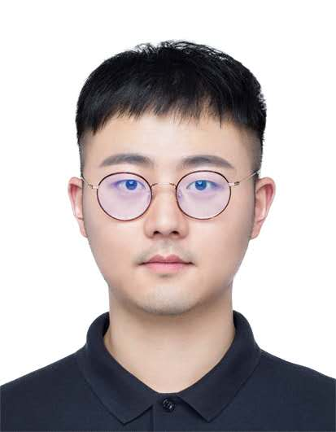
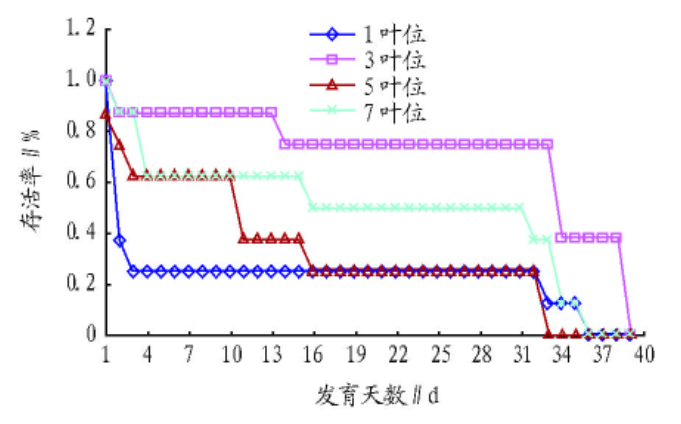

韩雨珂
|
 |


个人简介 [简历]
我现在是华南农业大学昆虫学系硕士三年级学生，导师是范骁凌副教授。现在主要从事鳞翅目弄蝶科线粒体基因组、分子系统发育、生物分类与进化以及生物地理方面的研究。 此前, 本科就读于长江大学植物保护系，指导老师是李传仁教授，主要研究昆虫行为与生态。
我对生物学与信息科学交叉领域非常感兴趣，希望通过计算机平台分析数据精准解决生物问题，或探索开发更适用的生物学工具。
News
- [07/2018] I started my internship in Nvidia, Bethesda, USA.
- [07/2018] The paper on segmentation from Prenatal Volumetric Ultrasound has been accepted by TMI.
- [07/2018] The paper on edge-aware point set consolidation network has been accepted by ECCV 2018.
- [07/2018] The paper on semi-supervised skin lesion segmentation has been accepted by BMVC 2018.
发表文章

|
韩雨珂, 黄思遥, 范骁凌*. "福纹尺蛾(Warren, 1893),中国纹尺蛾属一新纪录种（鳞翅目:尺蛾科）" 环境昆虫学报 (已接收), 2018.
[原稿] |

|
Jing Tang, Zhenfu Huang, Hideyuki Chiba Yuke Han, Xiaoling Fan*. "Systematics of the genus Zinaida Evans, 1937 (Hesperiidae: Hesperiinae: Baorini)" PLoS One, 2017.
[全文] |
|  | 杨洪桂,韩雨珂, 李传仁*. " 不同叶位杨树叶片对杨扇舟蛾发育和繁殖的影响 " 安徽农业科学 , 2015.
[全文] |
所获奖项
| 国家励志奖学金 |
| National Scholarship in China, 2012-2014 |
| He Zhijun Scholarship (1/300+, Highest Honor in College of Computer Science, Zhejiang University), 2014 |
| Kwanjeong Educational Foundation Scholarship, 2012-2014 |
| Meritorious Winner, Interdisciplinary Contest in Modeling (ICM), Consortium for Mathematics and Its Application, 2014 |
| The Outstanding Undergraduate Award (Awarded by CCF, 100 undergraduates every year in China), 2014 |
| Outstanding Graduates of Zhejiang University, 2015 |
Professional Activities
ISBI2018
IEEE Transactions on Medical Imaging(TMI)
Medical Image Analysis (MedIA)
IEEE Transactions on Biomedical Engineering (TBME)
Journal of Biomedical and Health Informatics (JBHI)
Neurocomputing
International Journal of Computer Assisted Radiology and Surgery(IJCARS)
Computer Methods and Programs in Biomedicine(CMPB)
Informatics in Medicine Unlocked
Journal of Electronic Imaging (JEI)
Teaching
| 2015-2016 | Fall | CSCI1130 Introduction to Computing Using Java |
| 2015-2016 | Spring | CSCI3180 Principles of Programming Languages |
| 2016-2017 | Fall | ENGG5108 Big Data Analytics |
| 2016-2017 | Spring | CSCI3150 Introduction to Operating Systems |
| 2017-2018 | Fall | CSCI3150 Introduction to Operating Systems |
| 2017-2018 | Spring | CSCI3150 Introduction to Operating Systems |
© Yuke Han | Last updated: 16/08/2018